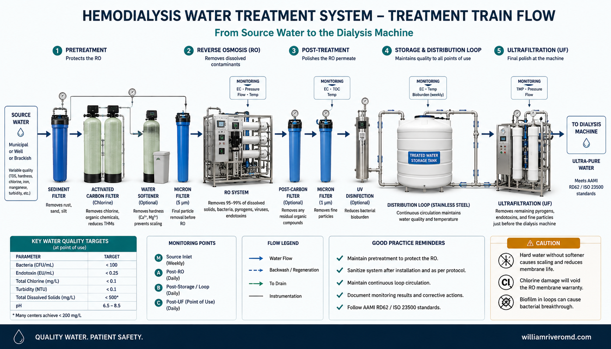
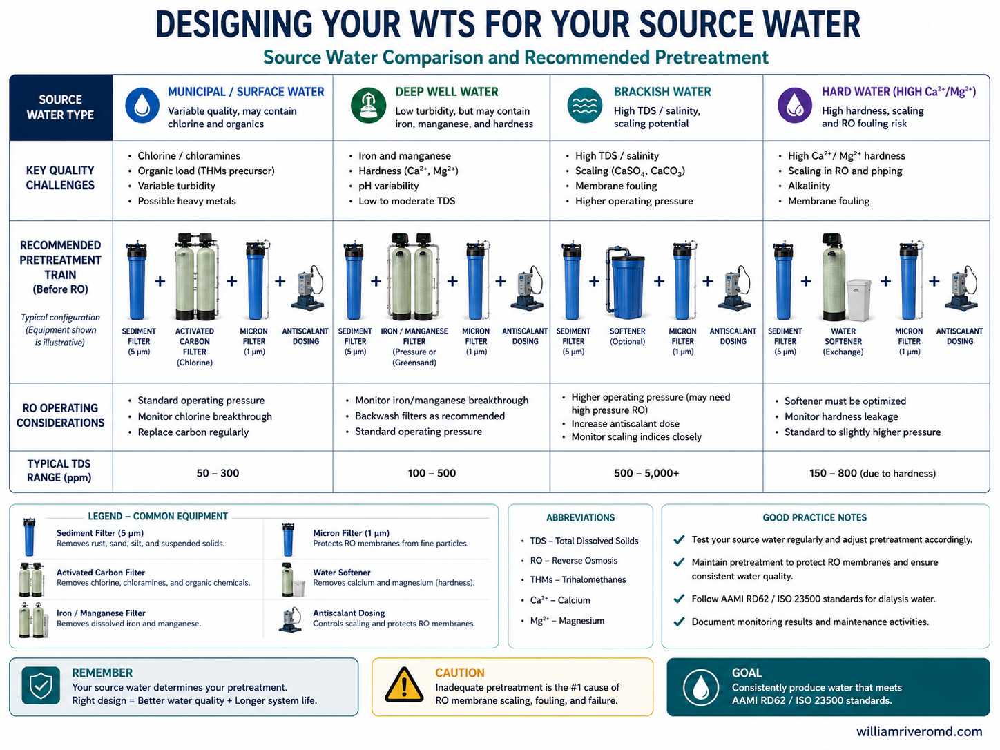
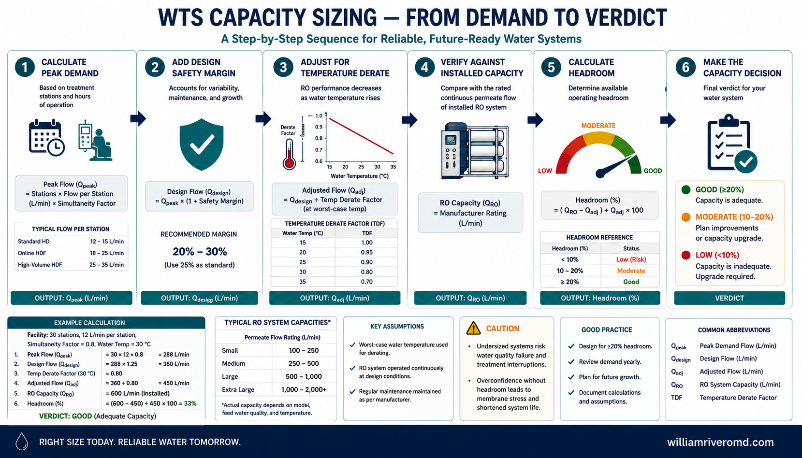
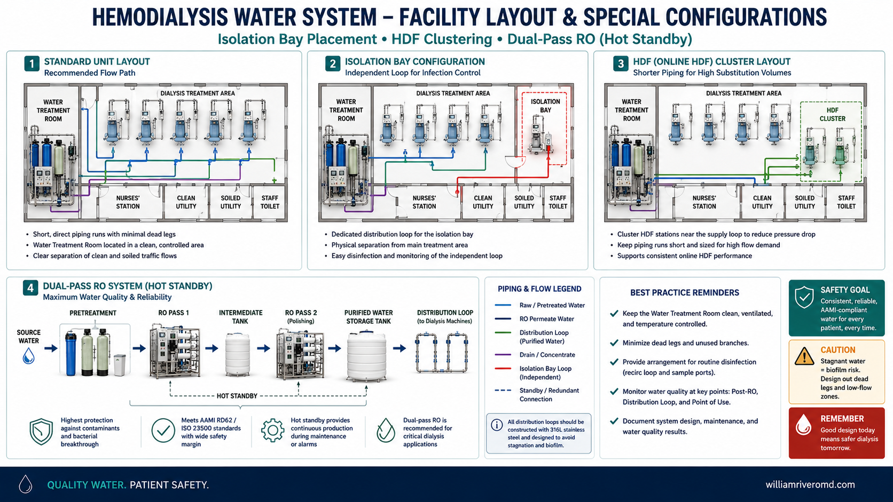
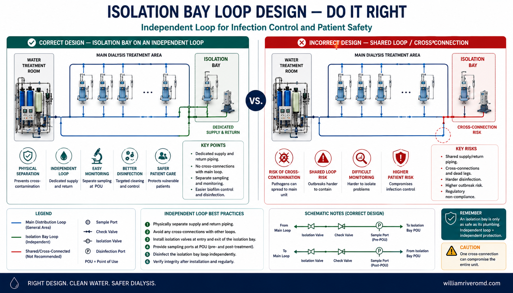
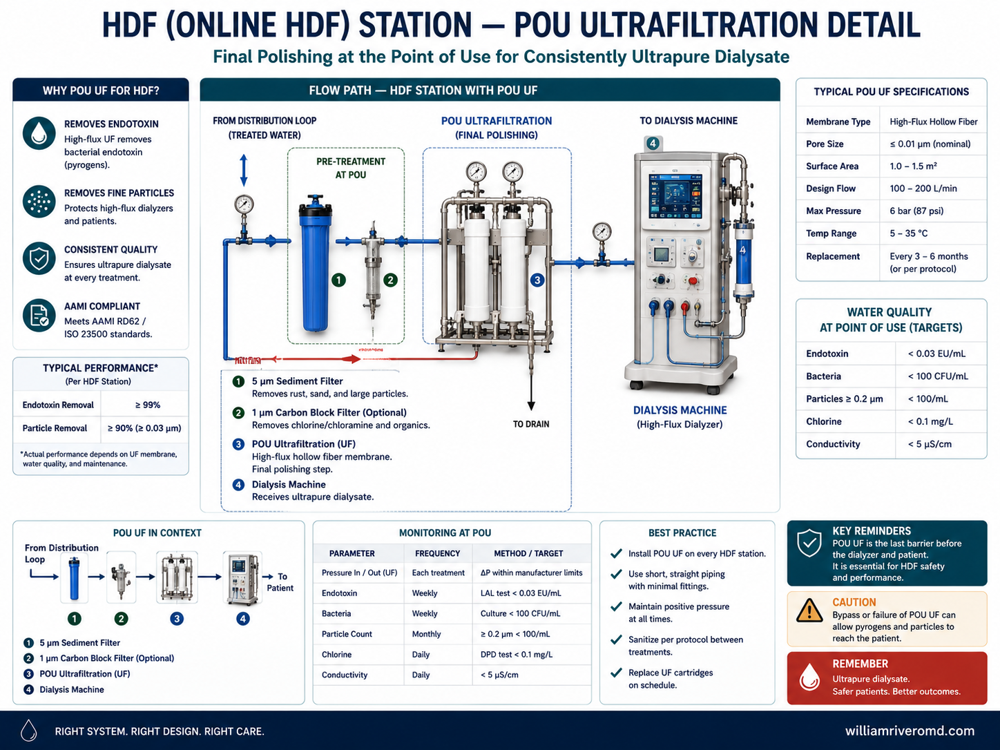
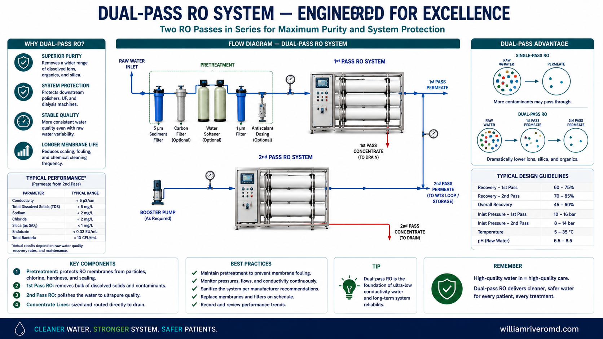
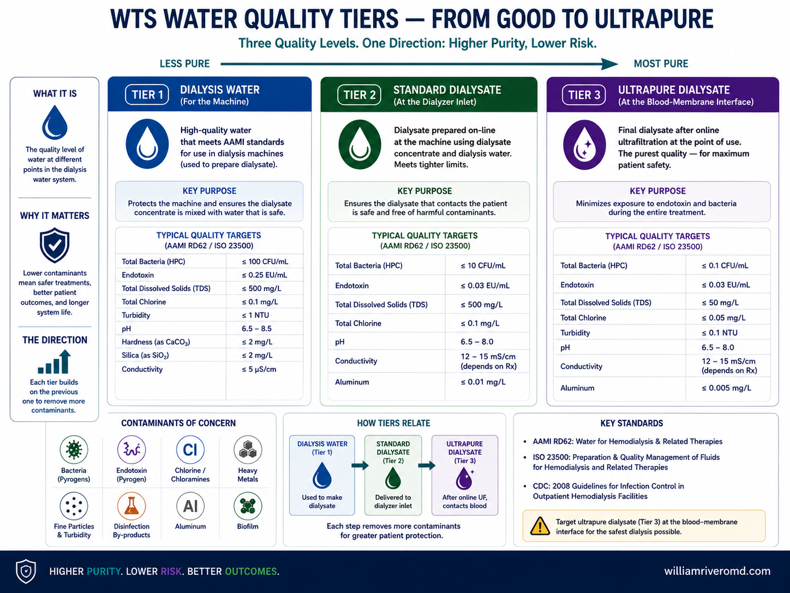
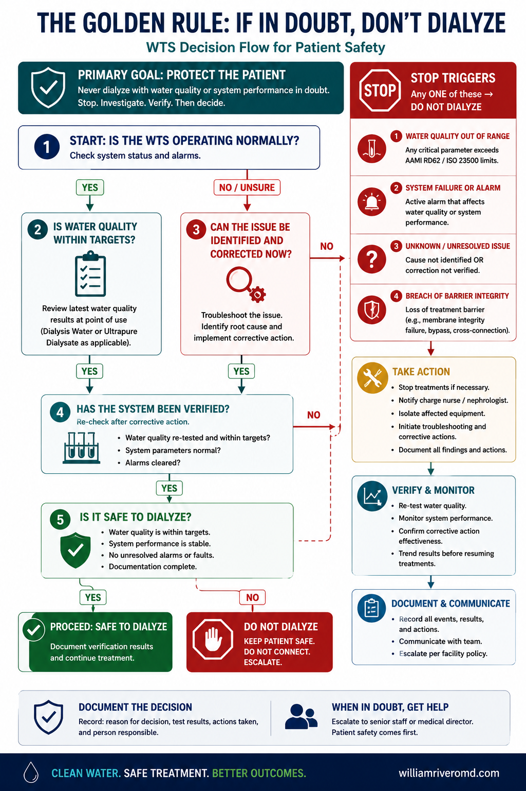

Why Water Quality Matters
A healthy person drinks roughly 2 liters of water a day, with the gut and liver acting as barriers before anything reaches the bloodstream. A hemodialysis patient is exposed to a far larger volume under far more dangerous conditions: each session uses roughly 120 to 200 liters of water to make dialysate, separated from the patient's blood only by the thin, highly permeable dialyzer membrane. A patient on thrice-weekly dialysis is exposed to 18,000–30,000 liters of water per year with no gut or liver barrier in between — any contaminant in the water can diffuse directly into the blood.
What contaminated water does to patients
| Contaminant | Clinical effect | Mechanism |
|---|---|---|
| Chloramine / chlorine | Hemolytic anemia, poor EPO response | Oxidative damage to red cells crossing the membrane |
| Aluminum | Encephalopathy, osteomalacia, microcytic anemia | Accumulation in brain and bone; no renal clearance |
| Bacteria & endotoxin | Pyrogenic reactions (fever, rigors, hypotension), chronic micro-inflammation | Endotoxin fragments back-diffuse and trigger cytokine release |
| Copper / zinc | Acute hemolysis, nausea, hemolytic anemia | Leached from plumbing; oxidative and direct toxicity |
| Fluoride | Acute toxicity, bone disease, fatal arrhythmia at high dose | Direct cellular and cardiac toxicity |
| Calcium / magnesium ("hard water") | "Hard water syndrome": nausea, vomiting, hypertension, headache, hypercalcemia | Sudden electrolyte load across the membrane |
| Nitrate | Methemoglobinemia, hypotension | Oxidizes hemoglobin; vasodilation |
| Sulfate | Nausea, vomiting, metabolic acidosis | Osmotic and acid-base disturbance |
The core principle
Water is the single largest "ingredient" in dialysis, yet it is the one the patient never consents to and cannot taste, see, or refuse. The water treatment system is a patient-safety device, not plumbing. Every check you perform is an infection-control and toxicology safeguard.
Regulatory and Standards Framework
Two layers govern dialysis water in the Philippines: the international quality standards that define the numbers, and the DOH administrative orders that make compliance a legal condition of your License to Operate (LTO).
2.1 Philippine DOH requirements
| Issuance | What it requires of your center |
|---|---|
| DOH AO 2012-0001 (Licensure of dialysis facilities) | Mandates a complete water treatment line — pre-treatment, reverse osmosis (RO), and post-treatment — and compliance with AAMI or equivalent water-quality standards as a condition of the License to Operate. |
| DOH AO 2013-0003 (Water analysis, monitoring & maintenance) | Sets the monitoring program: routine chemical and microbiological testing, ultrafiltration (UF) after RO for microbial/endotoxin control, and a documented Water Quality Management Program inside the facility. |
Testing cadence required for licensure
Microbiological testing: performed regularly (monthly at minimum). Bacterial count in product water must stay below the action threshold — AAMI/ISO 23500 best practice is <100 CFU/mL with an action level of 50 CFU/mL.
Chemical testing: at least every six months, and whenever feed-water quality changes.
Only DOH-accredited laboratories may perform the official tests, and any result exceeding standard must be reported immediately.
2.2 AAMI / ISO 23500 series
The current ISO 23500 series consolidates earlier standalone standards into one framework: water for hemodialysis (formerly ISO 13959), concentrates (formerly ISO 13958), and dialysis fluid quality (formerly ISO 11663). The numeric limits in §7 of this guide trace directly to this lineage and carry forward into current editions. The parts most relevant to the water room are general requirements (Part 1), water treatment equipment (Part 2), water for hemodialysis (Part 3), concentrates (Part 4), and dialysis fluid quality including ultrapure and online fluids (Part 5).
System Design and How It Flows
A dialysis water system is a chain of barriers. Each stage removes a specific class of contaminant and protects the stage that follows. Water always moves in one direction: from the feed source, through progressive purification, into a recirculating loop that feeds the machines, and back.
| Stage | Component | Removes / does | Why it matters downstream |
|---|---|---|---|
| Feed | Municipal or deep-well supply + feed tank | Raw water entry; break tank buffers supply interruptions | Defines the contaminant load everything else must handle |
| 1 | Backwash / multimedia (sediment) filter | Sand, silt, rust, particulates | Protects carbon and RO membranes from fouling |
| 2 | Water softener | Calcium & magnesium (hardness); exchanges for sodium | Prevents scale on the RO membrane |
| 3 | Carbon adsorption tanks (two in series) | Chlorine AND chloramine, organics | Chloramine destroys RO membranes and causes hemolysis — the critical safety stage |
| 4 | Microfilter / cartridge (1–5 µm) | Carbon fines, fine particulate | Final guard before the RO pump |
| 5 | Reverse osmosis (RO) unit | 90–99%+ of dissolved ions, bacteria, endotoxin | The heart of the system; produces "product water" |
| 6 | Storage tank + distribution loop | Holds & circulates product water to stations | Design must prevent stagnation and biofilm |
| 7 | Ultrafiltration (UF) / polishing | Residual bacteria & endotoxin (final barrier, <0.01 µm) | Delivers ultrapure water at the machine, per DOH AO 2013-0003 |
Read the flow as a sentence
Feed water → sediment filter → softener → carbon (chlorine + chloramine) → microfilter → RO → storage + loop → UF → dialysis machine. Carbon comes BEFORE RO (to protect the membrane); UF comes AFTER RO (to polish the product). A check valve or air gap separates the system from drains.

The 8-stage treatment train as a single wall-chart sequence — carbon comes before RO to protect the membrane, and UF comes after RO as the final microbial/endotoxin barrier.
- RO
- Reverse osmosis
- UF
- Ultrafiltration
© renalcarematters.com
3.1 Pre-treatment
Pre-treatment conditions raw water so the RO membrane survives. It is the part of the system that fails most often because it does the dirtiest work.
- Sediment / multimedia filter: backwashes periodically (timer-controlled) to flush trapped solids. Watch the pressure drop across it.
- Softener: resin beads swap hardness ions (Ca²⁺, Mg²⁺) for sodium. Requires a brine (salt) tank — never let it run empty.
- Carbon tanks: granular activated carbon adsorbs chlorine and — far more slowly and importantly — chloramine. Two tanks in series ("worker" and "polisher") guarantee breakthrough protection. Empty Bed Contact Time (EBCT) must be adequate (commonly ≥6 minutes total across the tanks at design flow).
Carbon tanks are the patient-safety heart of pre-treatment
Chloramine breakthrough is the classic cause of dialysis-associated hemolytic anemia — documented as far back as a 1987 outbreak that required transfusion in 41 patients after a carbon-filter failure (Tipple et al., 1991). Test total chlorine DOWNSTREAM of the carbon tanks (after the worker tank) before each treatment day and at intervals through the day. If total chlorine exceeds 0.1 mg/L, the worker tank has broken through and water must not be used for dialysis until corrected.
3.2 Reverse osmosis (RO)
RO is the core purification step. A high-pressure pump forces feed water against a semipermeable membrane; purified "permeate" (product water) passes through, while concentrated "reject" carries away rejected salts, bacteria, and endotoxin to drain. It removes 90–99%+ of dissolved ions and essentially all bacteria and endotoxin when intact. Key live readings: product (permeate) conductivity or resistivity, percent rejection, feed/reject/permeate pressures, and recovery ratio.
3.3 Storage and distribution loop
Product water is fed directly to the loop or held in a storage tank, then circulated continuously to every machine and back. The enemy here is stagnation, because standing water grows biofilm — a bacterial layer that sheds endotoxin and resists disinfection. Loop design favors continuous recirculation with high flow/turbulence and no "dead legs" (capped, unused pipe stubs where water sits). A vented storage tank uses a hydrophobic 0.2 µm air vent filter and a conical/sloped base for full drainage.
3.4 Ultrafiltration (UF) and polishing
UF membranes (pore size <0.01 µm) sit after RO — often one at the loop and a second point-of-use (POU) UF on each machine — as the final barrier against bacteria and endotoxin. DOH AO 2013-0003 specifically calls for UF after RO for microbial and endotoxin control, and UF is what allows a center to reach ultrapure water for online HDF.
Designing for Your Source Water
The baseline treatment train above assumes a municipal feed. Pre-treatment design must change for deep-well, brackish, and high-hardness sources — these are common variants for provincial and coastal Philippine dialysis centers.

What changes in the pretreatment train by source water, at a glance — municipal is the baseline; deep well adds iron/manganese removal; brackish often needs dual-pass RO; hard water needs a duplex softener at high loads.
- RO
- Reverse osmosis
- TDS
- Total dissolved solids
© renalcarematters.com
4.1 Municipal / treated water supply (baseline)
The utility has already disinfected — chlorinated or chloraminated — the supply, so the entire pretreatment train downstream of the carbon stage exists largely to undo that disinfection before it reaches the RO membrane and the dialysate. The dual GAC (granular activated carbon) tanks in series specifically guard against chloramine breakthrough: total chlorine is sampled between the two tanks and after the second tank before each shift, with an action limit of ≤0.1 mg/L before treatment may proceed. Utility-side "shock" hyperchlorination events — common after typhoons or flooding, when water districts spike chlorine dosing — are a known precipitant of breakthrough and should be flagged to staff whenever the water district advises one.
4.2 Deep well / borehole / artesian water
Common for provincial centers without a reliable utility connection. The source arrives untreated and biologically/chemically unpredictable, so pretreatment adds steps the municipal train doesn't need — while the dual-carbon chloramine logic above becomes largely irrelevant unless the facility chlorinates the well water itself for storage-tank disinfection.
- Iron and manganese removal: groundwater frequently carries dissolved iron and manganese that precipitate (rust-colored, then black-brown staining) once exposed to air, fouling softener resin, carbon media, and RO membranes if not removed first. Standard approaches are aeration or chemical oxidation followed by filtration, or a manganese greensand filter.
- Higher, more variable turbidity: borehole silt/sand fines argue for a more conservative, often backwashing, multimedia prefilter ahead of the cartridge stage.
- Higher pre-treatment bacteriological risk: with no upstream disinfectant residual suppressing growth in storage cisterns, periodic well-water/storage-tank disinfection and more frequent bacteriology/endotoxin testing of pretreatment-stage water are warranted.
- Baseline contaminant testing: iron, manganese, and hardness are the most commonly reported groundwater issues nationally and should be assumed present until tested. Arsenic is a documented but geographically localized concern in specific Philippine groundwater sources — not an established nationwide hazard — so facility-specific source-water testing (including arsenic) before commissioning a deep-well-fed WTS is the correct practice, not a blanket assumption either way.
4.3 Brackish or saline-influenced water
Coastal and island centers, some within seawater-intrusion range of shallow coastal aquifers, face elevated TDS/conductivity as the dominant design driver rather than organic or microbial load.
| Component | Standard freshwater RO | Brackish/saline-influenced design |
|---|---|---|
| Feed TDS | Low, stable | Elevated; may fluctuate with tide/season (saltwater intrusion) |
| Membrane type | Standard low-TDS RO element | Brackish-water RO (BWRO) element rated for higher TDS |
| Operating pressure | Standard | Higher, to overcome osmotic pressure |
| Pass configuration | Single-pass | Single pass often insufficient → dual-pass (double-pass) RO |
| Antiscalant | Optional/situational | Routine dosing ahead of RO |
| Recovery / reject volume | Higher recovery, lower reject | Lower recovery, higher reject volume — cost/logistics impact |
The operational trade-off to flag for planning: higher reject (concentrate) volume and lower recovery compared to a freshwater feed mean more feed water consumed per liter of usable permeate — a real cost and logistics consideration (water trucking, cistern sizing, reject disposal) for small coastal/island facilities that already pay a premium for source water.
4.4 Hard water (high calcium / magnesium)
Routine hardness is the softener stage's job, and most limestone-aquifer groundwater sits comfortably within a correctly sized softener's capacity. The design question is what changes at high hardness loads, not whether softening is needed at all.
| Component | Standard hardness | High-hardness design |
|---|---|---|
| Softener configuration | Single tank (or simplex with standby) | Duplex/dual-alternating tanks — one regenerates while one stays in service |
| Regeneration frequency | Per standard schedule | More frequent brine regeneration cycles |
| Resin/tank sizing | Standard capacity | Upsized resin volume for higher daily grain load |
| Backup protection | None typically needed | Antiscalant dosing pre-RO as a defensive backup |
| Failure mode if undersized | — | Resin exhaustion/channeling → hard water reaches RO → CaCO₃ membrane scaling/fouling |
As source hardness rises, daily grain load (volume treated × grains hardness per gallon) rises proportionally, so an undersized softener exhausts mid-shift or "channels" — hardness breaks through before scheduled regeneration. This is a silent failure mode: the water still looks and tastes normal. Verify post-softener hardness directly rather than assuming the softener is adequate from source hardness alone. Inadequate softening lets calcium and magnesium concentrate at the RO membrane surface, precipitating as calcium carbonate scale that fouls the membrane and shortens its service life — making softener sizing a direct RO-membrane-longevity issue.
Sizing & Capacity Planning
The medical director and facility leadership are responsible for ensuring the WTS can reliably supply every station it serves — undersizing is a documented, recurring cause of clinic-level water-quality failure (Kasparek & Rodriguez, 2015).
5.1 How to measure WTS capacity
- Capacity is the RO unit's rated permeate (product water) output — liters per hour (LPH) or gallons per day (GPD) — measured at a standard feed temperature (usually 25°C). RO output drops as feed water gets colder (roughly 2–3% per °C below the rating point), so a unit rated at 25°C under-produces on a cool morning unless margin is built in.
- Calculate actual peak demand, not average usage. Standard single-pass HD draws roughly 500–800 mL/min dialysate flow (≈30–48 L/hr per station); online HDF substitution fluid pushes a station to ~50–60 L/hr. Peak simultaneous demand = (number of stations running at the same time, not total stations in the building) × per-station flow, plus a design margin of 20–30% for recirculation-loop losses and headroom.
- Compare peak demand against the RO's rated permeate output — not the storage tank size. A large tank can mask an undersized RO for a while, but once the tank draws down faster than the RO refills it, every additional station drops outlet pressure/flow for everyone on the loop.
- Check the loop, not just the RO. Distribution-loop pipe diameter and recirculation pump must maintain adequate linear velocity — no dead legs, continuous turbulent flow — even after new machine take-off points are added.

The sizing calculation as one sequence: peak demand, plus margin, divided by the temperature-derating factor, checked against the RO's rated capacity to reach a Sufficient / Marginal / Insufficient verdict.
- RO
- Reverse osmosis
© renalcarematters.com
5.2 Increasing capacity when machines are added
- Recalculate total peak demand with the new station count, then size the gap against current RO rated output (with margin) before adding machines, not after.
- Add a parallel RO skid sized for the increment, rather than replacing the existing unit — this gives N+1 redundancy (one unit can be serviced or fail without losing all capacity).
- Scale pretreatment with the RO, not just the RO itself. Pushing more flow through the same carbon tanks reduces Empty Bed Contact Time (EBCT), risking chloramine breakthrough. Adding RO capacity without adding matching softener/carbon capacity is a common, dangerous shortcut.
- Re-size storage and the recirculation loop — bigger or additional storage if peak buffering is needed, and confirm the loop pump and pipe diameter still hit target velocity with the new branch takeoffs.
- Re-validate and re-document before going live: re-test conductivity/rejection, chlorine, and microbiological/endotoxin counts on the expanded system, and update the facility's Water Quality Management Program (DOH AO 2013-0003) to reflect the new configuration before the added stations treat patients.
Facility Layout & Special Configurations

The loop-level map for this section: where the isolation bay sits, where HDF stations cluster, and how a dual-pass RO train is arranged. §6.1–6.3 zoom into each of these in turn.
- RO
- Reverse osmosis
- UF
- Ultrafiltration
- HDF
- Hemodiafiltration
© renalcarematters.com
6.1 Isolation bay placement — hepatitis B and C
Bloodborne pathogens (HBV, HCV, HIV) are not transmitted through the RO-treated water/dialysate supply. Isolation requirements are about dedicated machines, supplies, and physical space — not a separate water-treatment stream. The WTS loop continues to serve every station, isolation included, from one centrally treated supply.
- Hepatitis B surface antigen (HBsAg) positive: current guidance recommends use of a dedicated dialysis machine that is never used for another patient (Jardine et al., 2019), consistent with a separate room and dedicated supply cart given how readily HBV persists on environmental surfaces.
- Hepatitis C positive: a dedicated machine is not required provided strict inter-patient cleaning and disinfection protocols are followed (Martin et al., 2022) — standard precautions plus routine surface/external disinfection on a shared machine is considered adequate. Some facilities still cohort HCV-positive patients by shift as an added margin; this is a facility policy choice, not a water-system requirement.
- Loop/plumbing placement: the isolation room's water/dialysate takeoff is just another branch off the same continuously recirculating loop. The practical engineering concern is that an isolation bay typically runs fewer patients per week, so its branch is more prone to becoming a low-flow dead leg that breeds biofilm. Keep the branch as short as possible, site the room where its branch can still join normal high-velocity recirculation rather than dangling off a long stub, and include the isolation branch in the routine flush/disinfection schedule even on days it isn't used.

Short branch (correct) stays inside high-velocity recirculation; a long branch (incorrect) becomes a low-flow dead leg that breeds biofilm even when unused.
- HBV
- Hepatitis B virus
- HCV
- Hepatitis C virus
© renalcarematters.com
6.2 HDF bays — ultrapure water requirements
Online hemodiafiltration (HDF) infuses substitution fluid produced from dialysate directly into the bloodstream, bypassing the dialyzer membrane barrier that protects standard HD — so HDF stations require ultrapure water/dialysate (bacteria <0.1 CFU/mL, endotoxin <0.03 EU/mL), roughly 100–1,000× stricter than standard dialysis water, and a key reason ultrapure water was adopted as standard for high-quality dialysis care (Canaud, 2011).
- Each HDF-capable machine needs its own point-of-use (POU) ultrafilter, typically two in series — one polishing the dialysate, a second "sterilizing-grade" filter immediately upstream of the substitution-fluid infusion line — in addition to the central loop UF.
- POU filters need periodic integrity testing (pressure-hold/diffusion test per manufacturer) and scheduled replacement on the validated interval — do not run them past it even if they "look fine."
- Bay placement: cluster HDF stations on the takeoff closest to the post-RO/UF point on the loop — shortest distance and residence time before the most demanding stations, minimizing bioburden accumulation in transit, and simplifying servicing of the extra POU hardware in one area.

The extra hardware one HDF station carries beyond a standard HD station: two point-of-use ultrafilters in series, an integrity-test port, and the ultrapure target at the substitution-fluid line.
- HDF
- Hemodiafiltration
- POU
- Point-of-use
- UF
- Ultrafiltration
- CFU
- Colony-forming unit
- EU
- Endotoxin unit
© renalcarematters.com
6.3 Dual-pass (double-pass) RO
Used when a single RO pass can't reliably hit ultrapure-grade rejection, or when feed TDS is high (brackish/hard/variable municipal supply).
- Configuration: first-pass permeate becomes the feed to a second RO module instead of raw/pretreated municipal water. Needs an interstage booster pump, because first-pass permeate exits at low pressure and the second membrane still needs its full operating pressure.
- Recovery: first pass typically runs 50–75% recovery (limited by scaling risk from raw feed); second pass runs much higher, often 85–90%+, since its feed is already low-TDS — antiscalant dosing is usually unnecessary on the second pass.
- Reject handling: second-pass reject is usually low enough in TDS to be recirculated back into the first-pass feed, improving overall system recovery — verify this doesn't reconcentrate any problem species for your specific feed water first.
- Array design: first pass commonly uses a tapered ("Christmas tree") membrane array to manage rising reject concentration; second pass is usually a simple single-stage array since its feed is already clean.
- What it buys you vs. UF: double-pass improves ionic/chemical rejection (the conductivity/TDS side). It does not substitute for ultrafiltration — UF (after the loop, plus POU UF at HDF stations) is still required for the microbiological/endotoxin barrier. The two are complementary, not interchangeable.

Pass 1's tapered array (50–75% recovery) feeds an interstage booster pump into Pass 2's single-stage array (85–90%+ recovery) — enough detail to sanity-check a vendor's dual-pass proposal.
- RO
- Reverse osmosis
- TDS
- Total dissolved solids
© renalcarematters.com
Water Quality Standards
These are the limits your testing is measured against, per AAMI/ISO 23500 (Suravaram et al., 2024; Humudat et al., 2020). Post this section in the water room.

Three ascending purity tiers, fixed in one image: dialysis water, standard dialysate, and ultrapure dialysate — the top tier gated behind UF/POU filtration and required for online HDF.
- CFU
- Colony-forming unit
- EU
- Endotoxin unit
- HDF
- Hemodiafiltration
© renalcarematters.com
7.1 Microbiological limits
| Fluid / grade | Total viable count (CFU/mL) | Endotoxin (EU/mL) | Action level |
|---|---|---|---|
| Dialysis water (product water) | <100 | <0.25 | 50 CFU/mL / 0.125 EU/mL |
| Standard dialysate | <100 | <0.5 | 50 CFU/mL / 0.25 EU/mL |
| Ultrapure dialysis water / dialysate | <0.1 | <0.03 | Required for online HDF |
The "action level" is a trigger, not a pass mark. When a result reaches the action level, investigate and intervene (disinfect, increase monitoring) even though the result hasn't yet exceeded the maximum — acting at the action level is how you avoid ever crossing the limit.
7.2 Maximum allowable chemical contaminants
Maximum concentrations in water used to prepare dialysate, make concentrates from powder, and reprocess dialyzers. Units are mg/L (ppm) unless noted.
| Contaminant | Max (mg/L) | Contaminant | Max (mg/L) |
|---|---|---|---|
| Toxic in dialysis | Electrolytes in dialysate | ||
| Aluminum | 0.01 | Calcium | 2 (0.1 mEq/L) |
| Copper | 0.1 | Magnesium | 4 (0.3 mEq/L) |
| Fluoride | 0.2 | Potassium | 8 (0.2 mEq/L) |
| Lead | 0.005 | Sodium | 70 (3.0 mEq/L) |
| Nitrate (as N) | 2 | Trace elements | |
| Sulfate | 100 | Antimony | 0.006 |
| Zinc | 0.1 | Arsenic | 0.005 |
| Barium | 0.1 | Mercury | 0.0002 |
| Beryllium | 0.0004 | Selenium | 0.09 |
| Cadmium | 0.001 | Silver | 0.005 |
| Chromium | 0.014 | Thallium | 0.002 |
Disinfectant residual limits (test these yourself, daily)
Free chlorine: ≤0.5 mg/L · Total chlorine (chlorine + chloramine): ≤0.1 mg/L. These two are the only chemical parameters you measure in-house every treatment day, downstream of the carbon tanks. The rest of the chemical panel is sent to a DOH-accredited laboratory.
Maintenance and Monitoring Schedule
Maintenance is divided between what operating staff do (checks, logging, salt, disinfection) and what biomedical/vendor engineers do (membrane changes, calibration, validation). Adapt frequencies to your manufacturer's manual and DOH requirements (Kasparek & Rodriguez, 2015).
8.1 Routine schedule
| Frequency | Task | Owner |
|---|---|---|
| Each treatment day (start) | Test total & free chlorine downstream of carbon tanks before the first patient. Record RO product conductivity / % rejection. Check feed, RO, and loop pressures. Confirm storage tank level and disinfection status. Verify hardness (softener working). | Nurse / Tech |
| Through the day | Repeat chlorine/chloramine test at the interval set by your SOP. Watch RO panel alarms. Observe for leaks, unusual noise, color/odor. | Nurse / Tech |
| End of day | Record running hours. Initiate scheduled disinfection if due. Complete and sign the daily water log. | Nurse / Tech |
| Weekly | Check and refill softener salt (brine tank). Inspect pre-filters and pressure drops. Microbiological/endotoxin sampling per facility schedule (loop and post-RO). | Tech |
| Monthly | Microbiological + endotoxin testing of product water (DOH-accredited lab). Replace sediment/microfilter cartridges per condition. Review trend logs. | Tech / Biomed |
| Quarterly | Carbon tank performance check / rebed assessment. Loop disinfection validation. Calibration check of online monitors. | Biomed / Vendor |
| Every 6 months | Full chemical analysis of product water (DOH-accredited lab). Service softener and carbon media. | Biomed / Vendor |
| Annually | RO membrane inspection/replacement as indicated. Full system validation, pump service, calibration of all sensors. Review and update SOPs. | Vendor / Biomed |
8.2 In-house tests you must know how to run
| Test | How / with what | Pass criterion |
|---|---|---|
| Total chlorine (chloramine) | DPD colorimetric test (total chlorine), sample taken AFTER the worker carbon tank | ≤0.1 mg/L |
| Free chlorine | DPD free-chlorine reagent at same point | ≤0.5 mg/L |
| Water hardness | Hardness test strip/titration on softener outlet | Effectively zero / per softener spec |
| RO product conductivity | Inline RO meter (µS/cm) and % rejection | Per RO spec; rejection typically >90–95% |
| Visual / sensory | Inspect for leaks, discoloration, biofilm slime, unusual smell | Clear, odorless, no leaks |
Disinfection — the discipline that keeps the loop safe
Biofilm is the chronic enemy. Disinfect the RO unit, storage tank, and distribution loop on a scheduled cycle using the method validated for your system: chemical (peracetic acid, sodium hypochlorite, or proprietary agents), heat/thermal, or ozone. After any chemical disinfection you MUST confirm the disinfectant is fully rinsed out — test for residual at every outlet and document a negative result before the system returns to patient use. A patient connected to water containing residual disinfectant can suffer hemolysis or death.
Troubleshooting
Use these matrices to recognize a problem, identify likely causes, and take correct first-line action.
Golden rule
If water quality is in doubt, do not dialyze with it. Take the affected stations or the whole system offline, switch to a validated backup if available, and escalate. No treatment is ever worth exposing a patient to unsafe water.

The Golden Rule as a literal decision path: any of four STOP triggers means take the water offline and escalate now; none present means continue routine monitoring.
© renalcarematters.com
9.1 Water chemistry and RO problems
| Symptom / alarm | Likely cause | First-line action |
|---|---|---|
| Total chlorine >0.1 mg/L after carbon | Carbon tank exhaustion / chloramine breakthrough; inadequate contact time; sudden rise in feed chloramine | STOP dialysis on that water. Notify biomed; rebed/replace carbon. Re-test until ≤0.1 mg/L before resuming. |
| Rising RO product conductivity / falling % rejection | Membrane fouling or degradation; failing membrane; high feed TDS; temperature change | Flag biomed. Check feed water and pre-treatment. Membrane cleaning or replacement may be needed. |
| Low RO permeate flow / low production | Fouled or scaled membrane; failing high-pressure pump; clogged pre-filters; low feed pressure | Check and change pre-filters; inspect softener (scale); check pump pressures; call vendor. |
| Softener not removing hardness | Salt/brine tank empty; resin exhausted/channeling; failed regeneration valve | Refill salt and force a regeneration; if hardness persists, service the valve/resin. |
| High feed/reject pressure or frequent backwash | Sediment filter loaded; scaling; valve fault | Inspect/replace sediment media; verify backwash cycle; check for scale. |
9.2 Microbiological problems
| Symptom / result | Likely cause | First-line action |
|---|---|---|
| Pyrogenic reaction (fever, chills, rigors, hypotension during/after run, no positive blood culture) | Endotoxin/bacterial contamination of water or dialysate; biofilm shedding; failed UF | Treat the patient and notify physician immediately. Quarantine and culture the water/dialysate. Inspect & disinfect loop; check UF integrity. Investigate as a cluster if >1 patient. |
| Bacterial count at/above action level (50 CFU/mL) | Early biofilm; lapsed disinfection; stagnation/dead leg | Increase disinfection frequency; review loop flow; re-sample. Intervene before the 100 CFU/mL limit is crossed. |
| Bacterial count or endotoxin above limit | Established biofilm; UF failure; sampling/handling error | Take system offline for the affected use; disinfect; replace UF; re-validate with repeat testing before reuse. |
| Repeated borderline counts despite disinfection | Dead legs, low loop velocity, degraded piping, or biofilm reservoir in tank | Engineering review of loop design; consider tank/loop sanitization or piping replacement. |
9.3 System / mechanical
| Symptom | Likely cause | First-line action |
|---|---|---|
| Visible leak or dripping at joints/fittings | Failed seal, loose fitting, pipe stress, vibration | Isolate the section if possible; place containment; call biomed. Watch for electrical hazard near pumps. |
| RO unit will not start / repeated trips | Low feed pressure or empty break tank; electrical fault; interlock from a sensor alarm | Check feed supply and tank level; read the alarm code; do not bypass safety interlocks. |
| Loud noise / cavitation from pump | Air in line, low inlet pressure, failing bearing/impeller | Check feed and pre-filters; report to biomed before bearing failure. |
| Disinfectant residual still positive after rinse | Insufficient rinse cycle; trapped chemical in dead leg or machine | Continue rinsing; re-test EVERY outlet; do NOT return to patient use until all outlets test negative. |
9.4 Step-by-Step Troubleshooting Algorithms
The tables above tell you what to look for. The algorithms below tell you what to do, in order, from the fastest and safest checks to the ones needing biomed or vendor support — with a checklist you can initial as you go. Work each one top to bottom; do not skip to a later step to save time.
| # | Problem | Urgency |
|---|---|---|
| 1 | High TDS / rising product-water conductivity | High |
| 2 | Low product water flow | Medium–High |
| 3 | Chloramine / total chlorine breakthrough | Critical |
| 4 | High bacteria/endotoxin or pyrogenic reaction | Critical |
| 5 | Softener not removing hardness | Medium |
| 6 | Abnormal pressures / frequent backwash | Medium |
| 7 | Positive disinfectant residual after rinse | Critical |
| 8 | RO unit will not start / repeated trips | Medium |
§9.4.1 High TDS / Rising Product-Water Conductivity High
Trigger
RO product (permeate) conductivity is climbing, % rejection is falling, or the RO panel shows a high-TDS/quality alarm. Rising conductivity means dissolved ions are getting through the membrane — the water is becoming less pure.
Algorithm
- Confirm it is real: check the reading against the RO display and, if available, a handheld conductivity/TDS meter. Rule out a faulty or uncalibrated inline sensor before acting.
- Record feed-water conductivity/temperature. A cold feed or a genuine rise in feed TDS (rainy season, source change, tanker delivery) raises permeate conductivity even with a healthy membrane.
- Check pre-treatment: is the softener still removing hardness? Scale from a failed softener is the most common cause of membrane fouling (see §9.4.5).
- Check % rejection, not just conductivity: rejection = (feed − permeate) / feed × 100. Compare to the membrane's baseline/spec (typically >90–95%).
- If rejection is only slightly low: schedule a membrane clean (CIP) per manufacturer protocol and re-test.
- If rejection is well below spec or still falling after cleaning: the membrane is fouled/degraded or an O-ring/seal is bypassing — notify biomed for membrane replacement.
Decision — is product conductivity above the level that risks exceeding chemical limits (per your RO spec / facility action level)?
YES → STOP using that water for dialysis; run on backup RO if available; escalate for urgent membrane service.
NO → increase monitoring frequency, log the trend, and complete corrective action before the next treatment day.
Checklist
- Reading confirmed against second meter / sensor not faulty
- Feed conductivity and temperature recorded
- Softener output hardness verified (near zero)
- % rejection calculated and compared to baseline
- Membrane cleaned or flagged for replacement
- Trend logged; medical director notified if limit at risk
§9.4.2 Low Product Water Flow Medium–High
Trigger
The RO cannot produce enough permeate to supply the stations, permeate flow reads low, the storage tank struggles to fill, or a low-flow/low-production alarm appears. Risk: stations may run short mid-shift.
Algorithm
- Verify demand vs. supply: how many stations are running? Confirm the shortfall is real and not simply peak demand exceeding a small system (see the Water Treatment Capacity calculator).
- Check feed supply: is the break/feed tank full and the inlet valve open? Low feed pressure starves the high-pressure pump. Restore feed first.
- Check pre-filters: a loaded sediment filter or clogged microfilter cartridge drops flow. Inspect pressure drop across each; replace if the drop exceeds spec.
- Check feed-water temperature: cold water is more viscous and permeates slower — RO output falls in cool weather. Confirm the temperature-compensated flow is within range.
- Read the pump pressures (feed / concentrate / permeate): low high-pressure-pump output suggests a failing pump, worn impeller, or a stuck concentrate/recovery valve.
- Inspect the membrane: scaling or fouling reduces flux. If pre-treatment is confirmed good and flow is still low after filter change, flag the membrane for cleaning/replacement.
Decision — can the system still safely supply all active stations at correct quality?
YES → continue, but correct the root cause (filters/pump) same day and monitor tank level.
NO → reduce the number of concurrent stations if clinically safe, switch to backup, and escalate to biomed. Do not compromise water quality to chase flow.
Checklist
- Feed tank full, inlet valve open, feed pressure adequate
- Sediment filter and microfilter pressure drops checked / cartridges changed
- Feed temperature within operating range
- Pump feed/concentrate/permeate pressures recorded
- Recovery/concentrate valve position verified
- Membrane flagged for service if cause not upstream
§9.4.3 Chloramine / Total Chlorine Breakthrough Critical
Trigger — CRITICAL
Total chlorine measured downstream of the carbon tanks is >0.1 mg/L (or free chlorine >0.5 mg/L). This is the classic cause of dialysis-associated hemolytic anemia (Tipple et al., 1991). Chloramine also destroys RO membranes.
Algorithm
- Do NOT begin or continue dialysis on this water. Treat this as a patient-safety stop, not a maintenance task.
- Confirm the result: repeat the DPD total-chlorine test with fresh reagent, sampling AFTER the first (worker) carbon tank. Rule out expired reagent or a sampling error.
- If still >0.1 mg/L, sample between the two carbon tanks and after the second (polisher) tank to locate the breakthrough — worker exhausted vs. both exhausted.
- Notify biomed/vendor to rebed or replace the exhausted carbon. Verify Empty Bed Contact Time (EBCT) is adequate at the current flow — high flow shortens contact time and causes early breakthrough (see the Carbon Tank EBCT calculator).
- Check for a feed-side surge: municipal chloramine boosting or a source change can overwhelm the carbon. Contact the water supplier if a system-wide spike is suspected.
- Return to service ONLY after a repeat total-chlorine test reads ≤0.1 mg/L. Document the result before the first patient.
If any patient was already dialyzing when breakthrough was found
Notify the physician immediately and assess for hemolysis (sudden fall in hemoglobin, back/chest pain, dyspnea, cola-colored plasma/blood in lines, hypotension). Be prepared to stop treatment. Preserve records and the water sample for investigation.
Checklist
- Dialysis on affected water STOPPED
- Result re-confirmed with fresh DPD reagent, correct sample point
- Breakthrough located (between/after carbon tanks)
- Carbon rebed/replaced; EBCT and flow verified
- Feed-side chloramine surge ruled out / supplier contacted
- Repeat test ≤0.1 mg/L documented before resuming
- Any exposed patients assessed for hemolysis; physician notified
§9.4.4 High Bacteria / Endotoxin or Pyrogenic Reaction Critical
Trigger — CRITICAL
A microbiological/endotoxin result at or above the action or limit level, OR a patient with fever, chills, rigors, or unexplained hypotension during/just after a run with no other source (possible pyrogenic reaction). Limits: water <100 CFU/mL & <0.25 EU/mL (act at 50 CFU/mL & 0.125 EU/mL). Ultrapure <0.1 CFU/mL & <0.03 EU/mL.
Algorithm — clinical (if a patient reacts)
- Attend the patient and notify the physician immediately — manage per pyrogenic-reaction protocol; consider stopping treatment.
- Do not discard the dialyzer or lines — save them and draw blood cultures if ordered, to distinguish pyrogenic reaction from bacteremia.
- Quarantine and sample the water and dialysate feeding that station for culture and endotoxin.
- If more than one patient reacts on the same shift, treat as a cluster and take the loop offline pending results.
Algorithm — system (contamination found or suspected)
- Review the disinfection log — was the last scheduled loop/tank disinfection performed and documented? Lapsed disinfection is the most common cause.
- Inspect for stagnation: dead legs, low loop velocity, a partially isolated station, or a storage tank not fully circulating.
- Check UF integrity — a breached ultrafilter lets bacteria/endotoxin through. Replace point-of-use and loop UF as indicated.
- Perform a full disinfection of RO, tank, and loop by the validated method; confirm contact time and concentration.
- Re-sample and re-validate. Do not return the affected use to service until repeat results are within limits.
- If counts stay borderline despite disinfection, escalate for an engineering review — biofilm reservoir or piping replacement may be needed.
Checklist
- Reacting patient managed; physician notified; dialyzer/lines saved
- Water + dialysate quarantined and sampled
- Disinfection log reviewed; last cycle confirmed or gap identified
- Dead legs / loop velocity / tank circulation inspected
- UF integrity checked and replaced if suspect
- Full validated disinfection performed and documented
- Repeat cultures/endotoxin within limits before reuse
§9.4.5 Water Softener Not Removing Hardness Medium
Trigger
Hardness test at the softener outlet is positive (should be near zero). Untreated hardness scales the RO membrane and shows up later as rising conductivity and low flow — so catching it here prevents §9.4.1 and §9.4.2.
Algorithm
- Check the brine (salt) tank — is there salt? An empty brine tank stops regeneration. Refill and force a manual regeneration.
- Confirm regeneration is actually occurring: verify the timer/metered setting and listen/observe for a regeneration cycle. A failed control valve won't regenerate.
- Look for resin channeling or exhaustion: after regeneration, re-test hardness. Persistent hardness suggests fouled/aged resin or a valve routing feed around the resin (see the Softener Sizing calculator to check whether the tank is simply undersized for your load).
- Check for a stuck bypass valve routing raw water past the softener.
- If hardness persists after salt + regeneration: service or replace the control valve/resin — call the vendor.
Decision — is hardness reaching the RO membrane right now?
YES → prioritize correction the same day to protect the membrane; monitor RO conductivity closely (§9.4.1).
Checklist
- Brine tank has salt; refilled if empty
- Manual regeneration forced and completed
- Timer / metered regeneration setting verified
- Bypass valve confirmed closed
- Post-regeneration hardness re-tested (near zero)
- Vendor called if resin/valve service needed
§9.4.6 Abnormal Pressures / Frequent Backwash Medium
Trigger
High or rising pressure drop across a filter, unusually high feed/reject pressure, or the multimedia filter backwashing far more often than normal.
Algorithm
- Identify where the pressure drop is: record inlet and outlet pressure across each pre-treatment vessel and the microfilter to localize the restriction.
- High drop across sediment/multimedia filter: media is loaded — verify the backwash cycle is running and effective; if the drop persists after backwash, the media needs servicing/replacement.
- High drop across microfilter cartridge: cartridge is spent — replace it.
- High reject/feed pressure at the RO: suspect scaling or a downstream restriction/closed valve; check the concentrate line is clear.
- Frequent backwash triggering: check the differential-pressure or timer setting; a fouled bed or incorrect setting causes over-cycling and wastes water.
- Rule out a mechanical fault: failing pressure gauge, partially closed isolation valve, or kinked line.
Checklist
- Pressure drop localized to a specific vessel/cartridge
- Backwash cycle observed and effective
- Sediment media / microfilter serviced or replaced
- RO concentrate line and valves confirmed open/clear
- Backwash trigger setting verified
- Gauges and valves ruled out as mechanical cause
§9.4.7 Positive Disinfectant Residual After Rinse Critical
Trigger — CRITICAL
After chemical disinfection, a residual test (peracetic acid / chlorine strip) is still positive at one or more outlets. Connecting a patient to water containing disinfectant can cause hemolysis or death.
Algorithm
- Keep the system OUT of patient service. Do not connect any machine until every outlet tests negative.
- Continue the rinse cycle for additional time per the manufacturer protocol.
- Identify where residual persists — a dead leg, an isolated station, or a machine holding chemical rinses out slowest. Rinse each machine individually.
- Re-test EVERY outlet (each station and the loop return), not just one representative point.
- Confirm the test method and strips are valid (in date, correct chemistry for the disinfectant used).
- Return to service only when all outlets read negative; record the negative result and the tester's initials for each outlet.
Checklist
- System kept out of patient service
- Rinse extended per protocol
- Each machine/station rinsed and tested individually
- All outlets tested — none skipped
- Test strips valid and correct for the agent used
- Negative result at every outlet documented with initials
§9.4.8 RO Unit Will Not Start / Repeated Trips Medium
Trigger
The RO will not start, shuts down shortly after starting, or trips repeatedly. Often a protective interlock responding to a real upstream problem — do not bypass safety interlocks.
Algorithm
- Read the alarm/fault code on the RO panel and note it before resetting — it usually names the cause.
- Check feed supply: empty break tank or low feed pressure is the most common trip. Confirm supply, tank level, and inlet valve.
- Check power and connections: verify the unit is powered, breakers are on, and there is no obvious electrical fault or water near electrical parts.
- Check for a sensor-driven interlock: high-conductivity, high-temperature, or leak-detection sensors will hold the unit off. Address the underlying condition rather than overriding it.
- Attempt one controlled restart after the upstream cause is corrected. If it trips again, stop and call biomed/vendor with the fault code.
Never do this
Do not bypass, tape over, or disable a safety interlock to force the RO to run. Interlocks exist to stop unsafe water from reaching patients.
Checklist
- Fault code read and recorded before reset
- Feed tank level, feed pressure, inlet valve confirmed
- Power / breakers / electrical safety confirmed
- Sensor interlock condition identified and corrected
- Single controlled restart attempted; vendor called if it re-trips
9.5 Escalation Contacts
Fill in for your facility and post beside the water log.
| Role | Name | Contact number | When to call |
|---|---|---|---|
| Nurse-in-charge | Any STOP condition; patient reaction | ||
| Medical Director | Patient reaction; limit exceedance; system offline | ||
| Biomedical Engineer | Membrane, pump, sensor, carbon, calibration faults | ||
| WTS Vendor / Service | Parts, membrane replacement, validation | ||
| Water Supplier / Utility | Suspected feed-side chloramine or supply problem | ||
| DOH-accredited Laboratory | Micro/endotoxin & chemical sampling and results |
Documentation, Logs, and the Water Quality Management Program
DOH AO 2013-0003 requires a documented Water Quality Management Program — defined SOPs, named responsible staff, a calibration and maintenance schedule, and complete, signed records that a surveyor or your medical director can review at any time.
- Daily water log: chlorine/chloramine results, RO conductivity/% rejection, pressures, tank level, disinfection status — dated and signed each shift.
- Disinfection records: date, method, agent and concentration, contact time, and the post-rinse residual test result (negative) for each cycle.
- Laboratory reports: monthly microbiological/endotoxin and six-monthly chemical analyses from a DOH-accredited lab, with evidence that out-of-range results were acted upon.
- Maintenance & calibration logs: filter/cartridge changes, salt refills, carbon rebed, membrane changes, sensor calibration, vendor service reports.
- Corrective action / incident reports: any limit exceedance, pyrogenic reaction, or system failure, with root cause and resolution.
If it is not written down, it did not happen
Logs are both a clinical safety tool and a licensing requirement. Trends in the daily numbers (creeping conductivity, slowly rising chlorine, climbing CFU counts) are your earliest warning of a failure — but only if they are recorded consistently and reviewed.
Quick Reference Card
Daily, before the first patient
- Test TOTAL chlorine after carbon tanks → must be ≤0.1 mg/L. If higher, STOP.
- Test free chlorine → must be ≤0.5 mg/L.
- Record RO product conductivity and % rejection.
- Check feed / RO / loop pressures and storage tank level.
- Confirm softener has salt and is removing hardness.
- Confirm any overnight disinfection is fully rinsed (residual negative).
- Sign the log.
Key limits to remember
| Parameter | Limit |
|---|---|
| Total chlorine (post-carbon) | ≤0.1 mg/L |
| Free chlorine | ≤0.5 mg/L |
| Bacteria — dialysis water | <100 CFU/mL (act at 50) |
| Endotoxin — dialysis water | <0.25 EU/mL (act at 0.125) |
| Ultrapure water (for HDF) | <0.1 CFU/mL & <0.03 EU/mL |
| Aluminum | ≤0.01 mg/L |
| Calcium / Magnesium | ≤2 / ≤4 mg/L |
Four things that mean STOP and escalate now
1. Total chlorine above 0.1 mg/L after the carbon tanks.
2. A patient with fever, chills, rigors, or unexplained hypotension during or just after a run (possible pyrogenic reaction).
3. Any positive disinfectant residual at an outlet before patient use.
4. A microbiological or chemical result above the limit, or a visible leak/biofilm in the system.